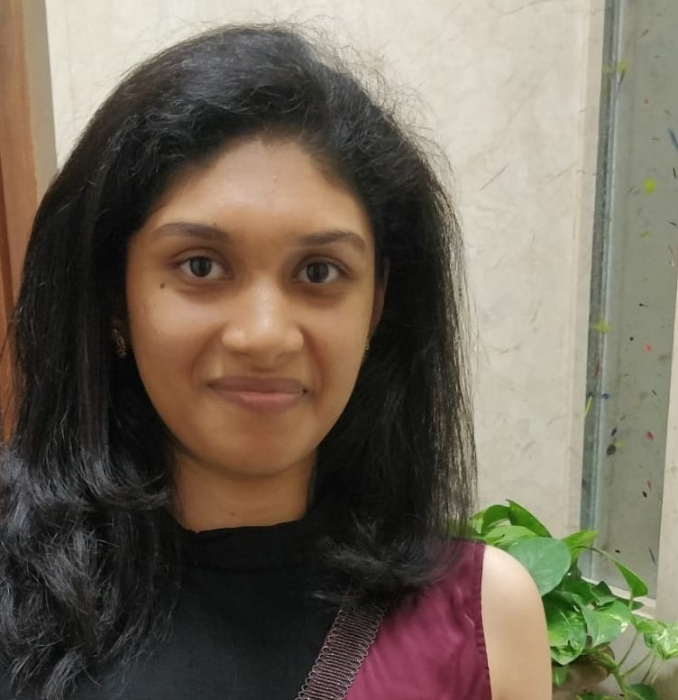

Ph.D. Candidate
Manning College of Information and Computer Sciences
Amherst, Massachusetts, USA
Email: pboddavarama@umass.edu

Ph.D. Candidate
Manning College of Information and Computer Sciences
Amherst, Massachusetts, USA
Email: pboddavarama@umass.edu
Note: I am currently on the job market for industry post-doc and full-time research scientist positions. Please contact me if you think I would be a good fit for your team.
| Year | Venue | Publication | Links |
|---|---|---|---|
| 2026 | CLeaR |
Improving Generative Methods for Causal Evaluation via Simulation-Based Inference.Generating synthetic datasets that accurately reflect real-world observational data is critical for evaluating causal estimators, but it remains a challenging task. Existing generative methods offer a solution by producing synthetic datasets anchored in the observed data (source data) while allowing variation in key parameters such as the treatment effect and amount of confounding bias. However, it is often unclear which generative methods to use and which values of parameters to choose when generating synthetic datasets. Moreover, existing methods typically require users to provide fixed point estimates of such parameters. This denies users the ability to express uncertainty over both generative methods and parameter values and removes the potential for posterior inference, potentially leading to unreliable estimator comparisons. We introduce simulation-based inference for causal evaluation (SBICE), a framework that treats the generative method and its corresponding generative parameters as uncertain and infers their posterior distribution given a source dataset. Leveraging techniques in simulation-based inference, SBICE identifies suitable generative methods and infers distributions over its parameter configurations to produce synthetic datasets closely aligned with the source data distribution. Empirical results demonstrate that SBICE improves the reliability of estimator evaluations by generating realistic datasets whose causal estimates closely match the estimates of the source data, making it a robust and uncertainty-aware approach to selecting causal estimators. |
LinkPDF |
| (Ongoing) | (Submitted to WSC) |
Extending Causal Metamodeling to a Non-Markovian Queue.Metamodels for discrete-event simulations approximate the behavior of simulation models without running expensive simulations. Prior work introduced modular dynamic Bayesian networks (MDBNs)---a class of metamodels that can estimate a range of probabilistic and causal queries (PCQs) using a single, trained model---but the method was limited to Markovian systems. In this paper, we initiate an extension of MDBNs to non-Markovian queues by approximating non-exponential distributions using phase-type distributions. This approach raises novel challenges, including balancing metamodeling accuracy and tractability when choosing the number of phases, efficiently learning metamodel parameters, and choosing the sampling interval that is used to approximate a continuous-time simulation by a discrete-time MDBN. We provide preliminary solutions to these challenges, yielding the first causal metamodeling technique for non-Markovian systems. Experiments on a G/M/1 queue demonstrate that the MDBN can produce accurate answers to PCQs with orders-of-magnitude speedup of inference times relative to direct simulation. |
|
| (Ongoing) | Manuscript |
Scaling Modular Dynamic Bayesian Networks for Queuing Simulations.In preparation. |
- |
| 2023 | WSC |
Causal Dynamic Bayesian Networks for Simulation Metamodeling.A traditional metamodel for a discrete-event simulation approximates a real-valued performance measure as a function of the input-parameter values. We introduce a novel class of metamodels based on modular dynamic Bayesian networks (MDBNs), a subclass of probabilistic graphical models which can be used to efficiently answer a rich class of probabilistic and causal queries (PCQs). Such queries represent the joint probability distribution of the system state at multiple time points, given observations of, and interventions on, other state variables and input parameters. This paper is a first demonstration of how the extensive theory and technology of causal graphical models can be used to enhance simulation metamodeling. We demonstrate this potential by showing how a single MDBN for an M/M/1 queue can be learned from simulation data and then be used to quickly and accurately answer a variety of PCQs, most of which are out-of-scope for existing metamodels. |
LinkPDF |
| 2023 | Biometrics |
Adaptive Selection of the Optimal Strategy to Improve Precision and Power in Randomized Trials.Benkeser et al. demonstrate how adjustment for baseline covariates in randomized trials can meaningfully improve precision for a variety of outcome types. Their findings build on a long history, starting in 1932 with R.A. Fisher and including more recent endorsements by the U.S. Food and Drug Administration and the European Medicines Agency. Here, we address an important practical consideration: how to select the adjustment approach—which variables and in which form—to maximize precision, while maintaining Type-I error control. Balzer et al. previously proposed Adaptive Pre-specification within TMLE to flexibly and automatically select, from a prespecified set, the approach that maximizes empirical efficiency in small trials (N < 40). To avoid overfitting with few randomized units, selection was previously limited to working generalized linear models, adjusting for a single covariate. Now, we tailor Adaptive Pre-specification to trials with many randomized units. Using V-fold cross-validation and the estimated influence curve-squared as the loss function, we select from an expanded set of candidates, including modern machine learning methods adjusting for multiple covariates. As assessed in simulations exploring a variety of data-generating processes, our approach maintains Type-I error control (under the null) and offers substantial gains in precision—equivalent to 20%-43% reductions in sample size for the same statistical power. When applied to real data from ACTG Study 175, we also see meaningful efficiency improvements overall and within subgroups. |
LinkPDF |
| 2022 | arXiv |
Measuring Interventional Robustness in Reinforcement Learning.Recent work in reinforcement learning has focused on several characteristics of learned policies that go beyond maximizing reward. These properties include fairness, explainability, generalization, and robustness. In this paper, we define interventional robustness (IR), a measure of how much variability is introduced into learned policies by incidental aspects of the training procedure, such as the order of training data or the particular exploratory actions taken by agents. A training procedure has high IR when the agents it produces take very similar actions under intervention, despite variation in these incidental aspects of the training procedure. We develop an intuitive, quantitative measure of IR and calculate it for eight algorithms in three Atari environments across dozens of interventions and states. From these experiments, we find that IR varies with the amount of training and type of algorithm and that high performance does not imply high IR, as one might expect. |
LinkPDF |
| 2022 | Manuscript |
Characterizing and Applying Methods for Constructing Observational Data to Evaluate Treatment Effect Estimators.In preparation. This work studies construction of observational datasets for more faithful and systematic evaluation of treatment effect estimators. |
- |
| 2020 | INFORMS |
Estimating the Prevalence of Multiple Chronic Diseases via Maximum Entropy.The prevalence of multiple chronic disease conditions (MCC) among the U.S. population is steadily increasing and accounts for an outsized share of healthcare expenditures. A predictive model for the probabilities of co-occurring conditions is crucial for planning and implementing complex care interventions, estimating aggregate healthcare costs, and studying physiological associations among conditions. Although the number of MCC patients is large, the chronic-condition combinations among these patients exhibit significant heterogeneity, leading to data-sparsity issues that thwart the simple maximum-likelihood estimation approaches used today. We combine maximum-entropy, data-mining, and machine learning techniques to create an algorithm for estimating MCC prevalence in data-sparse settings; it estimates the prevalence of unseen combinations in a principled manner that is mathematically consistent and reflects the MCC associations that have enough support in the data to be trustworthy. The viability of our approach is demonstrated via experiments on synthetic data and a detailed case study using Medical Expenditure Panel Survey (MEPS) data. |
Link |